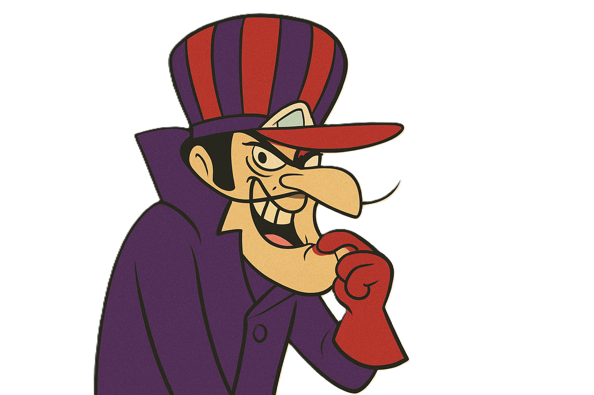

Vaga: Desenvolvedor(a) do Projeto "Pegue o Pombo"
Contratante: Dick Vigarista & Companhia Aérea do Fracasso
Local: Céus do Desespero — Base Secreta nas Montanhas
Qualidades Exigidas
- Capacidade de trabalhar sob pressão extrema (especialmente quando o pombo está fugindo).
- Espírito de equipe duvidoso, mas obediência garantida ao chefe.
- Criatividade para bolar planos mirabolantes e armadilhas que talvez funcionem.
- Persistência infinita, mesmo após repetidos fracassos semanais.
- Senso de humor para lidar com as risadas do Muttley.
Conhecimentos e Experiências
- Experiência prévia em projetos de perseguição aérea ou engenharias explosivas.
- Domínio em mecânica de aviões malucos e programação de armadilhas automáticas.
- Conhecimento em estratégias anti-pombo (certificação “Pegue o Pombo” é um diferencial).
- Experiência com testes beta em planos que falham é um plus.
Benefícios
- Ambiente de trabalho acima das nuvens (literalmente).
- Plano de saúde (caso caia do avião).
- Treinamentos exclusivos com Dick Vigarista sobre “Como ser malvado com classe”.
- Risos gratuitos do Muttley a cada falha sua.
- Possibilidade de crescimento pessoal (não necessariamente sucesso profissional).
- Café por sua conta!
Local de Trabalho
- Base aérea flutuante do Dick Vigarista, equipada com o icônico “Máquina Voadora 00”.
- Possibilidade de viagens internacionais — desde que o pombo voe pra lá.
Habilitação Necessária
- Licença para pilotar aeronaves excêntricas (categoria D — D de “Doido”).
- Certificado em engenharia do caos ou equivalente prático.
- Desejável: não ter medo de alturas, explosões ou risadas sarcásticas.

© 2025 Companhia Aérea do Fracasso — Todos os planos reservados.